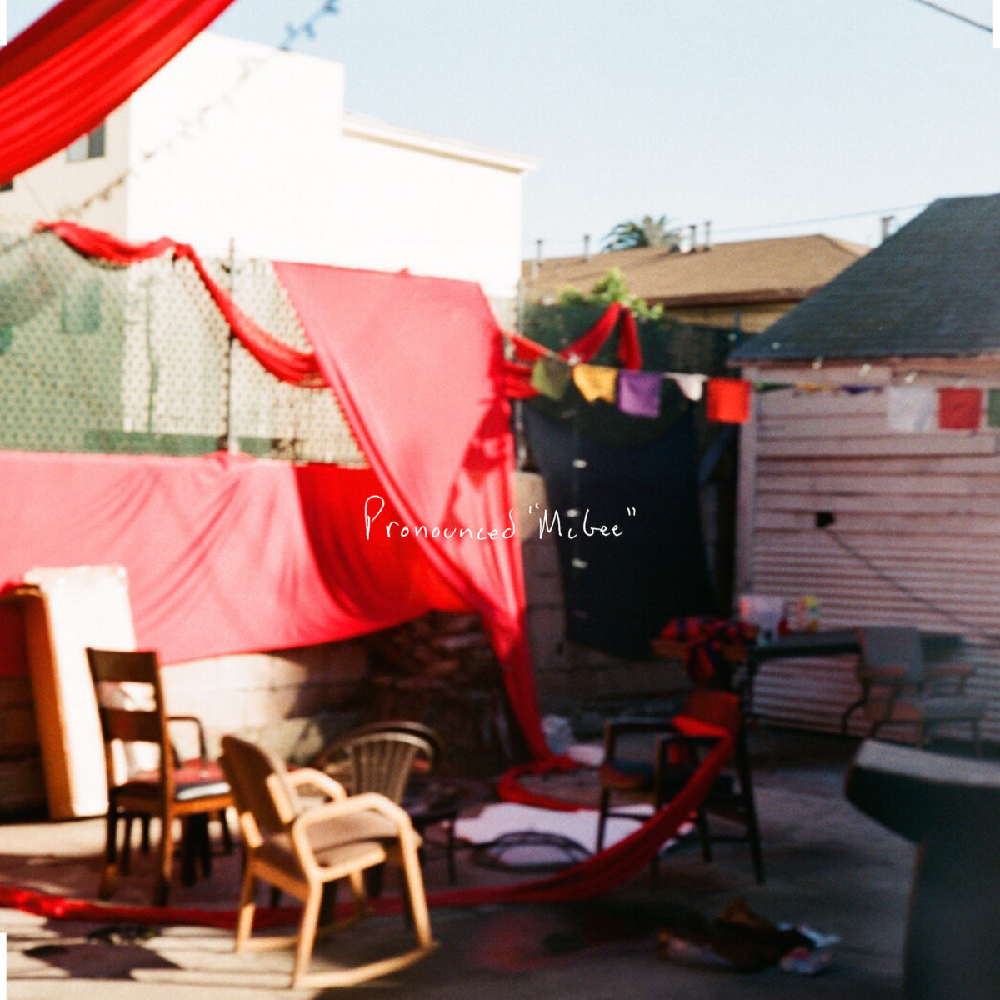
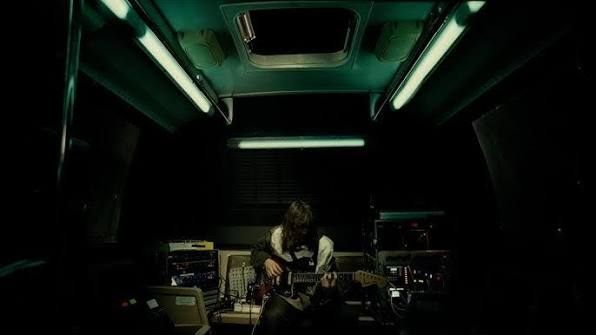
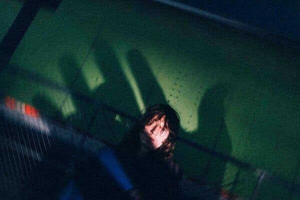
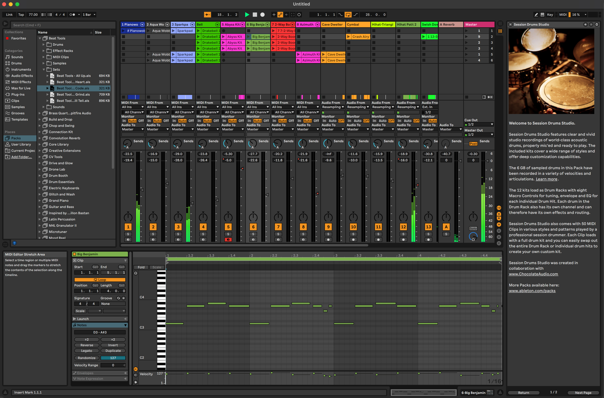
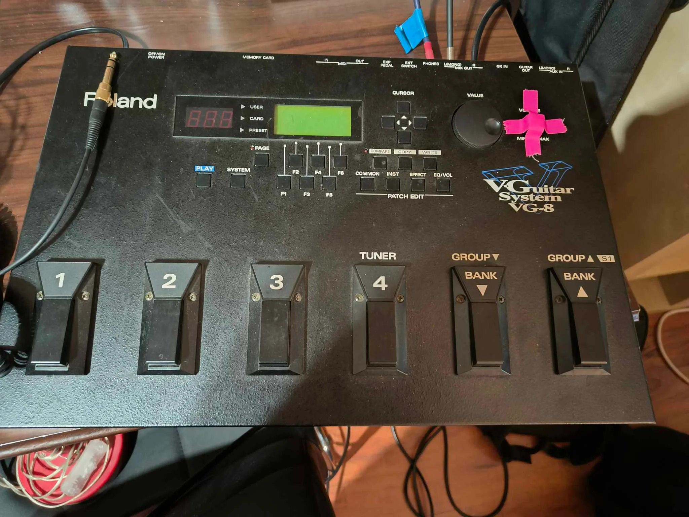
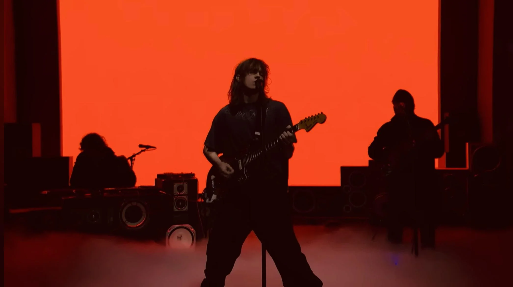
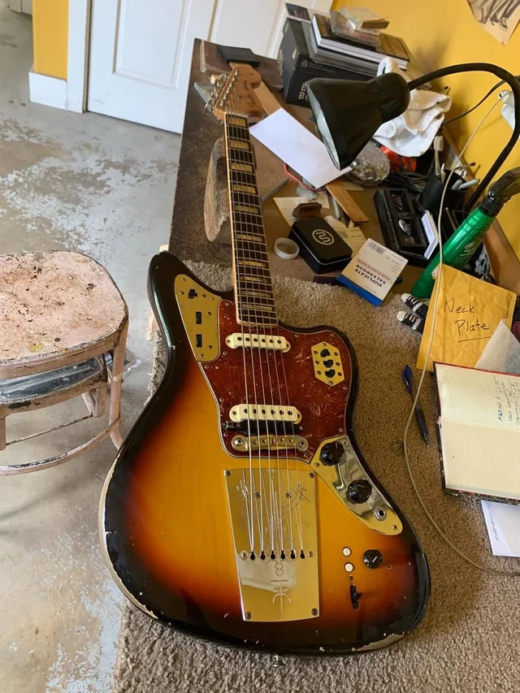
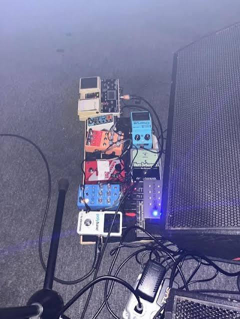
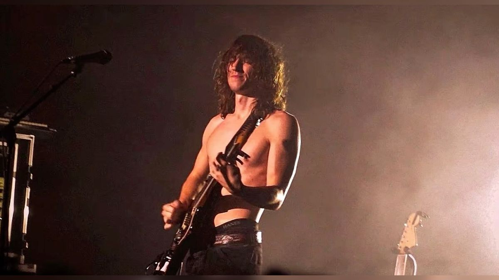

reel 03 — 2017
"I Know How You Get"
The debut single. Self-released, self-produced. No label, no rollout machine — just a bedroom project finding its first listeners.
It didn't sound like a demo. That was the point, and it's the first sign of a pattern that holds for the next six years: the limitations weren't hidden, they were the sound.

.jpeg)
reel 04 — 2018
On the way
Two self-produced EPs, Pronounced McGee and Fool, both made the same way the first single was: alone, with whatever was in the room. Then Frank Ocean played "You" on his Beats 1 radio show — the first sign this wasn't staying a bedroom secret, and the first outside confirmation that the limitations were working.
"Every era on this timeline starts the same way: alone, with a guitar and a tape machine."

reel 05 — the other side of the desk

2019
2021
2023Writing and producing for other artists
Dijon, Omar Apollo, Bon Iver, Justin Bieber among them. Proof that his sound isn't a solo-project fluke: other people are desiring it, the same gear and the same instincts, just pointed at someone else's discography.
This is the stretch most profiles skip, because nothing here is a headline. But it's also the stretch where his sound stopped being one person's accident and started being a reputable method other people could call on.

reel 06 — 2024
Two Star & the Dream Police
The debut album. SNL. Jimmy Kimmel. The moment the bedroom project became something closer to a headline act, without Mike ever changing his sound or process.
Now you know how the cold open came to be.
reel 07 — now
The reference tape
"How to Get Mk.gee's Guitar Tone ($0 vs $1000 Rig)" — AudioHaze, YouTube
In his own words
Footage of him walking through his own rig
"MK GEE onstage interview — Mike's showing his gear before concert"
reel 08 — how the tone gets built
Guitar → pedals → tape → mix
The same signal path across every era on this timeline.

Guitar
The source tone before any processing.

Pedals
Layered pitch and modulation, stacked rather than in isolation.
Tape
Degradation kept deliberately, not fixed in mastering like most artists do.
Mix
Vocal and guitar sit close together rather than fighting for lead.
